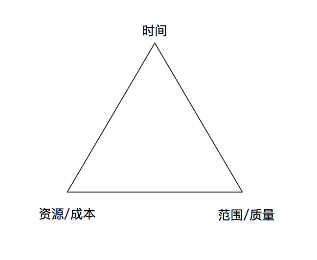
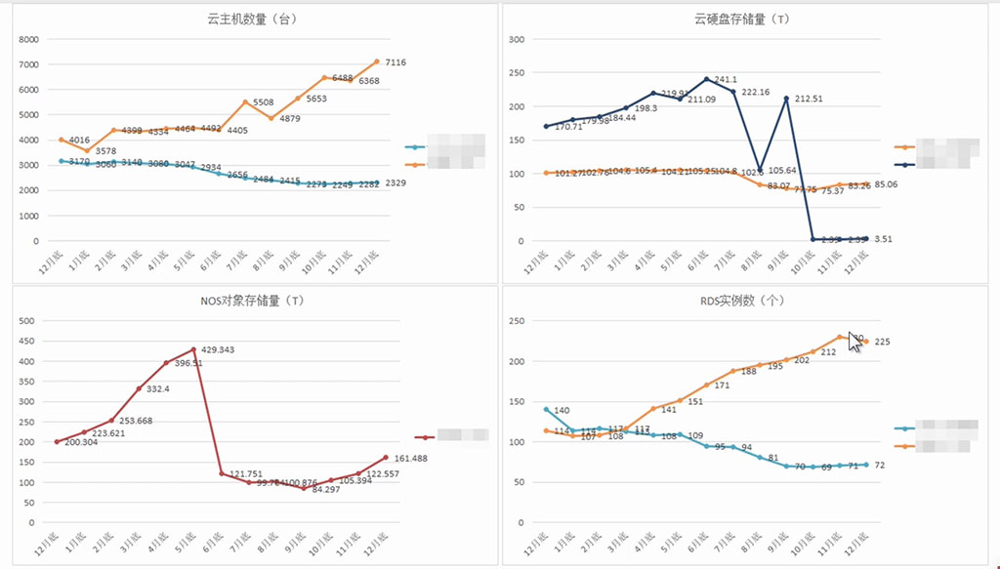

项目管理概述
一、重新认识项目管理
A.无处不在的项目管理
1.项目是为创造独特的产品、服务或成果而进行的临时性工作——PMBOK
2.项目是指一系列独特的、复杂的并相互关联的活动，这些活动有着一个明确的目标或目的，必须在特定的时间、预算、资源限定内，依据规范完成——百度百科
3.项目管理是将知识、技能、工具与技术应用于项目活动，以满足项目的要求——PMBOK
4.项目管理：在项目活动中运用专门的知识、技能、工具和方法，使项目能够在有限资源限定条件下，实现或超过设定的需求和期望的过程——百度百科
5.TED将敏捷开发方法引入家庭：https://open.163.com/movie/2013/12/C/G/M9E8D1AI2_M9ED5BSCG.html
6.项目管理五大过程组：
- 启动：千里之行，始于足下
- 规划：运筹帷幄，决胜千里
- 执行：言出必行，行必结果
- 监控：审时度势，沉着应变
- 收尾：慎终如始，如履薄冰
7.项目管理=通用能力
- 1）执行力
- 2）责任心、自驱力
- 3）全局观、客观开放
- 4）感知力、觉察力
- 5）靠谱
8.人人都是项目经理
- 1）透明、检验、适应
- 技术、需求，都会增加复杂性
- 人的因素增加了另一维度的复杂性
- 经验型的世界
- 2）采用检验和随之的适应来优化目标的实现
- 3）有效的检验和适应需要有透明性
B.那传说中的铁三角

1.所谓“铁三角”，指的是三者中任意一方的变动都会对其它二者产生影响
2.项目管理的目标是平衡三者的关系，使之达到最佳的效果
3.多快好省？
- 1）谁的需求？——管理层
- 多=范围大，快=进度快，好=质量好，省=成本低
- 违背常理
- 2）项目经理如何应对？——做“计划”的重要性
- 通过计划达到最优解来达成
- 尽量靠近“多快好省”
- 3）如何看待铁三角？
- 无法估算的工作量：研究型、性能调优
- 重视而不唯一：根据实际情况灵活应用
4.铁三角所思
- 各因素互相牵制
- 对需求的管理是源头：一切的源头
- 单纯加人是个“焦油坑”：不可滥用，增加了N个幅度的沟通复杂度
- 时间总是最易确定的因素，也是最容易被重视的维度
- 要克制追求时间的冲动
- 最易伤害：长期质量（系统可扩展性、架构灵活度等，工作效率、学习成长等）
- 衡量什么，就得到什么
C.什么是项目管理思维
1.目标管理
- 1）点头之前多问几个“为什么”
- say yes就要为结果负责了
- 缩小目标与结果的偏差
- 2）期望管理：结果vs过程
- 3）“奇怪”的期望
- 业务方的需求并不一定是你成功的交付
- 4）成功交付，是唯一的目标吗？
- 也需要关注团队的长期健康成长
2.全局眼光
- 1）低头抬头：前后上下通吃
- 了解上下所有信息
- 2）假想演绎：想像沙盘
- 汇总信息，演绎项目发展
- 3）归纳联系：问题、风险、懂了
- 总结，识别风险，应对问题，知道为什么会产生的情况的原因
3.项目分解
- 1）对“小而美”的追求，哪怕应对的“排山倒海”
- 2）凡事皆可拆：事、人、物
- 3）交付：增量式（快速、试错、风险）
- 4）改进：每次一小步（接纳、适应）
- 5）团队：功能团队（交付能力、克服划水、自组织、激活）
4.流程管理
- 1）药，不可多吃！（流程不可太过）
- 2）规范性vs灵活性
- 基本框架上的因地制宜遵循但不死板
- 重视流程背后的原则而不是流程行动本身
- 3）持续改进
- 没有一劳永逸的流程
- 来自团队意愿
- 每次一小步
- 4）落实重于制定（一个小时的制定至少要10个小时的跟踪）
- 5）要找到early adopter(最早愿意应用你的流程的人)
5.风险意识
- 1）只相信你有权相信的：开发对测试说，我的代码没BUG了….
- 2）风险识别，贯穿始终
- 3）拓展信息来源，让信息汇向你：信息桩，感知信息流动（团队中有两个人会是信息的汇总点）
- 4）致命风险，不仅仅是上交：考虑如何影响上级
- 5）两份风险列表，一份不公开：
- 6）悲观心态看项目，乐观心态看团队
- 7）不再成天救火
二、互联网产品中的项目管理
A.互联网产品中的项目管理（上）
1.PMP
2.常量：范围、时间、质量
3.变量：产品类型、生命周期、团队建设
B.互联网节奏下的项目管理（下）
1.项目管理做什么？
- 交付：范围、时间、质量……（硬技能，冰山上）
- 组织：团队、氛围、能量、文化、目标……（软技能，冰山下）
2.互联网项目管理特点
- 1）快！离用户近！
- 2）范围：来源广泛，需求多变
- 3）时间：快速试错，透明
- 4）质量：全民测试，阶段性质量
3.范围管理
- 1）需求管理及Backlog
- 来源：策划、运营（含用户）

- 2）WBS：Work Breakdown Structure，工作分解结构
- 对完成项目目标、创造可交付物所需执行的项目工作的分解
- 组织并定义了整个项目范围
- 最底层的WBS单元叫做工作包，是进度安排、成本估计和监控的基础
- 3）变更管理
- 分类处理（重要变更vs中小变更）
- 负责人审批
- 一线团队自我决策
- 背后的原则：关键是人，而非流程；基本原则和理念（拥抱变化、产品重心、为什么要记录）
4.时间管理
- 1）时间计划
- 首先是迭代方式：版本、固定时间盒
- 基于WBS和估算的时间计划
- 当你遭遇时间倒排时：范围、缓冲
- 背后的原则：必须有计划；目标时间是否是一个承诺？
- 时间估算都是相对的，只是概率时间
- 2）执行监控
- 站会&燃尽图
- 怎么作才不像一个监工？项目经理向后站，获益于团队之间彼此的沟通
- 背后的原则：透明
5.质量管理
- 1）软件质量：反映实体满足明确的和隐含的需求的能力的特性的总和
- 不止是BUG
- 质量标准的三个层次：程序质量、产品质量、业务质量
- 质量管理是个流程问题还是个能力意识问题？
- 质量是整个团队的一根“弦”
- 2）预防vs检查：设计出来的质量，而非测试出来的质量
- 测试前置：评审、走查、开发冒烟
- 越后期的问题代价越大
- 3）互联网特色
- 全民测试：Bugbash（所有，市场、运营、客服、产品）、内测封测
- 不同阶段的质量要求
- 小步快跑控制质量风险，PDCA戴明环
C.适应性的互联网项目管理
1.产品/项目类型与项目管理重点
- 1）应用类别
- 应用类：用户体验、快速响应、短迭代、拥抱变化
- 平台类：稳定性、扩展性、质量管理、CP（提供方）沟通、短迭代
- 基础类：稳定性、性能、用户识别和管理、质量管理
- 2）移动属性
- 纯移动：移动内多端决策和协调、适当的迭代节奏
- Web+移动：重点的动态把握、多端进度和资源协调
- 纯Web：越来越少、风险管理
- 3）团队规模
- 10人以下：简单的沟通机制、强业务目标导向
- 10-40人：项目管理赋能、分层沟通、透明性、拆子线
- 40人以上：专职项目经理、沟通机制、透明性、拆子线
- 4）时间长度
- 1个月以内：快速迭代冲刺、重启动和目标导向
- 1个月以上有限期：拆分迭代、重启动和目标导向
- 长期：确定迭代模式、团队建设、愿景和蓝图
2.产品生命周期
- 1）产品生命周期
- 不是产品的使用属性，是产品的市场营销生命
- 进入期、成长期、成熟期、衰退期
- 风格型、时尚型、热潮型、扇贝型

- 2）迭代的作用
- 互联网产品的生命周期，本质上是不断更迭的新版本的生命周期，众多版本的生命周期综合形成产品整体的生命周期，并通过迭代获得产品价值和利润的上升

- 项目管理高效执行交付助推产品进入增长期
- 3）生命周期中的项目管理重点
- 进入期：范围管理，真正的MVP快速版本成型，内测封测，功能验证大于质量
- 成长期：产品大方向确认，快速交付节奏建立，质量和性能要求上升，市场反馈闭环
- 成熟期：迭代节奏，稳定的质量和性能，需求池管理，稳定的反馈渠道中寻找，新爆点
- 衰退期：稳定的频率和问题解决周期，新的增长点挖掘，团队士气保持
- 4）随需应变，与市场同呼吸
3.团队建设阶段
- 1）团队结构将反映在你的产品形态上
- 2）形成期、震荡期、正规期、表现期

- 3）项目管理：帮助团队尽快跨过早期阶段
- 形成期：定义方向、任务、期限、规范，启动会，团建，学习
- 震荡期：协调情绪、加强沟通、建立信任、随需调整、认同方向
- 正规期：团队凝聚力，共同目标、信任、鼓励协作、流程制定和改进、松驰有度
- 表现期：团队责任感，自我管理、肯定鼓励、处理突发、关注大局
- 4）项目经理在团队发展过程中的注意点
- 团队可能一直处于、也可能随时重新进入形成期-震荡期、正规期：业务绩效、关键人员、大批新人……
- 团队负责人起着关键作用，当ta不再被信任时，团队将持续处于震荡期，最终的结果是解散
- 每个团队负责人都是需要被教练的，ta的状态行为代表整个团队
- 每个新人进入一个团队，都将经历这四个阶段，包括PM自己
三、项目管理基础痛点
A.可不可以更快点
1.工具一：真正的优先级
- 1）什么是真正重要的？这真的是个进度优先的问题吗？
- 2）什么不能被动摇？
- 3）什么可以协商？
2.工具2：负（jia）荷（ban）
- 1）加班吧！（谁提出的）
- 2）“透明”的力量、“激活”（开会说明为什么，意义、目标、责任感；燃尽图显示进度不行了自动加班）
- 3）80-90%->110%；警戒线：120%（工程师工作负荷度）
3.工具三：缓冲
- 1）压力越大、时间越紧，越需要缓冲
- 2）几个误区：
- 估算就可以马虎点
- 太紧了，没余地留缓冲
- 上次的缓冲没用，这次也算了吧
- 3）缓冲的作用：
- 需求变更
- 估算不足
- 请假……
- 4）缓冲增加方式
- 迭代内缓冲：20%
- 缓冲迭代：查漏补缺
4.工具四：范围缩减
- 1）作为紧急预案，列入风险管理
- 2）项目经理必须懂业务：需求分析、用户视角（跟策划团队一起探讨，提出意见）
- 3）可被缩减的范围
- 用户初始阶段触达不到的需求
- 少量用户才会用到的非核心需求
- 4）范围的缩减需要与合作方沟通和确认
- 5）是否采取预案，需要设定触发条件和时机，也和迭代计划相配合
5.需求可以被简化？（慎用）
- 1）除了可以缩减的范围，还有可以简化的需求
- 2）但任何被阉割了的需求，都将是未来连绵不绝的债务
- 3）且，也许永远都不再有空间来补偿
6.质量可以被缩减吗？（慎用）
- 1）一定的情况下，质量可能被缩减：比如可控人员的使用路径；初期产品的性能质量
- 2）但，所有的缩减，未来都是要还的！
7.如果时间还是不够：沟通
- 1）沟通对象：关键干系人——如外部合作方、领导

- 2）当你尽了全力的时候，上帝会为你开窗
- 3）和时间管理同等重要的，是沟通管理！
8.压箱底的宝贝：
- 稳：内心觉得不可能但也要稳定军心
- 悲：带着风险意识，悲观兜底的意识
- 乐：面对团队，团建、鼓励
B.关于开会那些事
1.开会常见陷阱
- 1）又长又臭：身心俱疲，没有收获
- 2）迟到早退：无纪律，无效率
- 3）没有结论
- 4）没有跟进
- 5）各玩各的手机/电脑
- ……
- 执行力和团队战斗力会受到极大影响
2.通常都有哪些会议？
- 1）规律性会议
- 全体会议：一般是月会
- 组长周会：小团队组长会议
- 三方周会：业务、运营主导的产品中需要策划、产品、市场一起开会
- 职能周会：不同职能员工部门
- 2）临时性会议：问题解决
- 目的性强
- 效率高
3.为什么要开周会？
- 汇总和同步状态信息？（效率低下，日报周报就可以了）
- 了解整体状态（整个产品的状态，业务目标情况，状态情况调整）
- 重要事件沟通（公司产品重要事件）
- 重要问题讨论及白板（紧急问题走临时性问题解决）
4.会议管理的几个tips
- 1）警惕
- 踫一下
- 临时通知
- 不知从何聊起
- 低头一族
- 太过规律以致麻木
- 2）应对
- 谁？目标？（没有目的，需要确认，谁负责）
- 规划或周知的时间点（时间，迟到红包，长度）
- 明确的议程和记录
- 人太多了？议题及控场
- 感知和回顾（问卷，改进，提高）

5.特别给周会的几个建议
- 1）规模和时间：<=15人，<=1.5h（两个披萨原则）
- 2）要不要轮流汇报：警惕！避免！（直接放到周报里就行了）
- 3）该讨论什么
- 不讨论急事、小组内问题、大方向决策、执行细节
- 要讨论：跨团队问题、重要事项合作问题等有收获的问题
- 4）如果要同步状态呢？避免职能维度，可以业务线维度（业务线负责人简要说）
- 5）发言比例：1:1:1（会议主持人:主要陈述事件的人:讨论的人，项目经理不唱独角戏）
- 6）如果有每日站会：纯技术进展周会可以省略
C.飘忽不定的干系人们
1.明明用心做事，为什么心生郁闷？
- 1）真正的舒畅来自于信任、归属和接纳，哪怕共同经历狂风巨浪
- 2）干系人（相关方）识别：发起人、负责人、业务及职能组长、团队、外部依赖方……
- 3）是谁？作用？最关键
- 4）彼此关系、性格、对项目和你的期待、Ta的困扰
2.怎么搞定ta
- 1）常规
- 识别
- 规划参与方式（不同干系人周报形式不一样）
- 执行到位
- 2）信任的建立
- 真正了解期待（建立面对面沟通）
- 共同工作（和ta以及ta的团队）
- 提供各种有效帮助（了解ta真正需要的帮助）
- 3）真正的合作伙伴
- 急ta所急（代入感，ta业务模块的挑战、风险，建议、应对、沟通）
- 更全更广的视角（补充干系人的不足，业务、团队、职能团队状态看待问题）
- 独到的价值（给予）
3.新手项目经理，如何面对位高权重的ta
- 1）忘记自己的身份，记住对方的身份
- 2）你不是为ta而活，ta亦不是在对你刻意观察
- 3）做自己，当你自己好了，当你之于团队的价值有了，那ta就能真的看你，以及看重你了
- 4）一周一到两次的沟通；非正式（聊天、吃饭）；正式（约谈）
- 5）内容：不谈周报；沟通团队重要事项；ta关心的某一块业务好的和不好的；团队流动和稳定性问题；风险问题；一些产品的阶段性事项；预案等等
4.和关键干系人之间出现问题了怎么办
- 1）满意度打分表
- 2）任何一段关系，都有波峰波谷
- 3）能够做好项目和产品，有价值的交付比其他都重要
- 4）出现问题可能是因为什么：
- 信任未建立：新人刚来等
- 阶段性不满：产品业绩不好；项目经理表现让ta不满意等等（保持目标一致）
- 触及了边界：不小心触及了某些边界（摊开说，承担）
- 价值观不同：（求同存异，敞开内心，去信任彼此）
- 5）共同的产品和团队目标
5.飘忽不定，源于你的内心
四、互联网项目经理的成长之路
A.项目经理工作定位
1.项目经理的职责
- 1）项目的成功交付：
- 时间、质量、范围（基础）
- 记录数据（为了找到问题和改进的契机）
- 持续改进（引导和激发，来自于团队自身）
- 2）团队的健康成长：
- 能力：专业、沟通、个人管理、时间管理……（培训，契机埋点到整个项目中，给予空间）
- 意识：产品、创新、责任感、规范性……（贯穿整个项目执行过程中，最重要的是团队所理解的原则，导入产品意识和用户的意识）
- 3）成功的背后是“事”和“人”的区别：事要成功，背后的人往往是成功的关键
- 4）沟通大部分是在处理人的问题
- 5）项目经理职责连续桶

- 6）绩效和组织架构也会直接反映到项目的落地过程中来
2.项目管理服务模式
- 1）专职项目经理
- a）项目标准：
- 项目团队规模在长期40人以上，含策划、设计、开发、测试等各角色
- 复杂产品项目集管理中的一条，重点产品线或版本
- b）PM时间精力：>=50%
- c）项目管理难度：中
- d）项目经理职级要求：高级及以上
- e）服务时间：长期
- 2）项目起步引导者：项目运转机制引导
- a）项目标准：
- 项目团队规模不限，主要针对10人以下小规模项目，以起步阶段的项目为主
- b）PM时间精力：<=20%
- c）项目管理难度：低
- d）项目经理职级要求：高级及以上
- e）服务时间：1个月
- 3）阶段性转型顾问（敏捷教练）
- a）项目标准：
- 一般针对以单个大型产品为单位的转型需求
- b）PM时间精力：>=50%
- c）项目管理难度：高
- d）项目经理职级要求：资深及以上
- e）服务时间：9-12个月
3.项目管理服务特点
- 1）弱矩阵
- 项目成员归属职能组，项目经理无职权
- 全靠信任、口碑和软权力
- 软/微权力：专业力（具有项目管理专业背景的人）、信息力（最大的日常权力，了解整个项目全面信息，话语权）、影响力、整合力、流程力
- 2）第三方
- 利弊双刃（把握中正的位置）
- 客观第三方，信任和协调的源头
- 中正的立场，别坐错了凳子；跨团队合作中的催化剂
- 3）全局：打通脉络
- 来源于信息力和融合力
- 最佳的风险识别者
- 处处都是你，那么，你是往前一步还是退后一步？
4.互联网公司PMO定位
- 1）Project Management Office项目管理办公室是对项目相关的治理过程进行标准化，并促进资源、方法论、工具和技术共享的一个组织结构
- 2）PMO的职责范围可大可小，从提供项目管理支持服务，到直接管理一个或多个项目
- 3）专业项目管理服务、流程规范、专业互通借鉴、职业发展和积累、专业培训、效能工具
B.项目经理能力模型
1.能力模型
- 1）产品项目经理：C端产品完整链路
- 2）交付项目经理：B端大单交付实践
- 3）能力图谱：专业能力、通用能力、专业贡献
- 4）能力图谱的作用：取长补短、下个阶段的能力发展方向
2.产品项目经理能力图谱
- 通用能力：组织协调能力、沟通能力、分析能力（风险）、学习能力（各个方面都要懂一点）
- 专业贡献：项目经验、学习分享、人员培养、技术专利/论文
- 专业能力：项目规划能力、项目执行和监控能力、项目收发和持续跟进能力、团队教练能力
- 0项目新人->4项目管理权威

3.交付项目经理能力图谱
- 通用能力：组织协调能力、沟通能力、问题解决能力（大量来自客户方的问题）、学习能力
- 专业贡献：项目经验、学习分享、人员培养、技术专利/论文
- 专业能力：项目规划能力、项目执行和监控能力、谈判能力（独有，和客户方的谈判沟通）、团队教练能力

C.项目经理成长路径
1.戴尔的学习法则
- 70%：来源于工作实践（边做边想边应用，做回顾和总结）
- 20%：反馈指导和相互学习（PMO当中互相学习和借鉴的部分）
- 10%：正式的面授学习（培训、书、理论知识和借鉴）
2.应届毕业生：
- 不建议从项目经理开始职场之路
- 转项目经理之前，最好有2-3年开发/测试基础
- 如果非从项目经理开始，那你要花额外的时间打基础
3.项目经理成长路径
- 1）前三年：打基础——硬技能（项目管理、敏捷知识）、方法、实践、数据开始独立（来自于项目和团队反馈的数据）
- 2）又三年：摸特色——项目集（多条业务线融会贯通）、业务理解、独当一面形成自己的管理特色
- 3）再三年：走新路——复杂业务、不明朗的局面、各自不同特色的新突破
- 4）技术、业务、教练
4.再往后呢？
- 1）任何发展，都别忘了你的“积累”
- 2）什么是积累？
- 知识？准备
- 经验？10000小时
- 思维模式：左脑（计划）vs右脑（感知力）；自律vs自我
D.如何转型为项目经理
1.要不要转？什么时候转？
- 项目管理思维
- 思维模式（自律）
- 性格色彩（在蓝色成分上不会特别弱）
- 执行力？责任心？
- 转型要乘早
- 不宜超过2-3年
2.怎样可以转型成功？
- 1）内部转型
- 优秀的本职工作和成绩
- 潜在匹配的特质
- 做足了准备：专业
- 向上管理以及积极争取
- 2）外部转型（跳槽）
- 基本只限在三年以内工作经验
- 卓越的基础素质
- 做足了准备：专业+公司+业务
3.转型/选择互联网项目经理后的阵痛
- 1）From开发：
- 客观第三方的定位
- 信息收集视角
- 站出来

实战：激活组织深化中的小确变-网易美学
A.混沌中建立秩序
1.项目经理介入之初
- 1）产品经理定好需求隔墙给研发
- 2）deadline还不变
2.给我一个支点，我就可以XX
- 1）就是扔片树叶，你也得进JIRA
- 2）在产品在开发间形成契约
3.我们玩点“大”的？
- 1）回顾会，让纸条飞一会！
- 2）严把需求入口关：需求评审、需求变更
4.项目管理三板斧头
- 1）计划+风险+协作
5.带来的变化
- 1）稳定的发布节奏：市场运营活动提前2周提需求
- 2）对话的合作模式：双向对话的合作模式
- 产品：JIRA+需求评审+变更管理
- 研发：确切的评估及排期
B.发动群众小确变
1.小确变：微小而确定性的变化
2.项目管理是在处理业务（方向盘）和研发（发动机）的协调联动
3.Idea->Demo->经过验证的核心原型->规模化的增长模式，螺旋上升，或直接转型

4.帮助团队实现自我进化
- 1）探索中的产品和发展中的团队的矛盾
- 2）源头诉求：技术是个黑盒，技术不被尊重
- 3）核心团队、行动调整：启动技术联合会，开辟新的研发视角
- 4）成型转交：两周一次迭代，两月轮流主持
5.团队自治的研发双周会

- 1）研发主导
- 2）遇到的困难，需要的支持
- 3）需求bug bash，给需求找bug
- 4）代码review、交互视觉走查、SQL review、Job review、需求方验收、回归测试

- 5）Code Review三步走：
- 冻结期内所有提交必须经过code review
- 线上bug的修复必须经过code review
- 提测前后交叉code review（推荐）
6.项目经理升级为“教练”
- 1）搭建互信的桥梁：业务负责人、主管层、团队
- 2）让双方都相信项目经理
- 3）如实反馈盲区，聆听和同理心

7.带来的变化：研发效能的提升

8.如何发动小确变：
- 1）组建变化引擎：Core Team
- 2）搭建舞台：给到足够的关注和支持
- 3）让技术也理解业务的压力
C.在行动中共创
1.互联网创新型产品就好比行军打仗
2.行进中学习（Learning Driven Development）
- 1）闻出坏味道：从内容到形式全面调整
- 2）上线第一天就有可能推倒重来
3.从瀑布到敏捷，从敏捷再到“共创”：实验来验证，适用于非常快速的迭代
4.5天时间盒的设计冲刺
- 1）产品设计运营闭关回炉，跨界跨团队的集体实验
- 2）第一天澄清问题
- 3）第二天各自草拟方案
- 4）第三天做出决策
- 5）第四天制作原型
- 6）第五天用户验证
5.组建跨角色的共创小组
- 1）从用户到产品、设计、开发人员
- 2）更加丰富的反馈回路：每周有多场共创小组的复盘会
- 3）无处不在的用研实验室：每周1-2次访谈，3个月内5次快速调整
- 4）需求设计bug bash：早期发现需求设计潜在问题

6.协同共创
- 1）所有人都成为这个小组的owner
7.互联网创新型产品的项目管理方法

实战：网易大数据内部创业从0到1
A.以网易大数据为例
1.全链路项目管理介绍
1）项目经理是做什么？
- 大环境的变化：To C产品、To B产品
- 技术型：开发、QA
- To C产品：产品、设计、开发、QA、市场、运营、客户……
- To B产品：产品、设计、开发、QA、市场、销售、售前、售后、实施、客服……
2）项目管理的使命
- 帮助整个团队流程、沟通、协作等优化，帮助各专业角色推进相关工作，一起完成目标
- 专注于项目最重要的东西：团队KPI达成（产品交付、销售成果）
- 帮助产品业务成功
3）项目管理三大体系：
- 业务全链路项目管理
- 网易项目管理体系
- 教练
2.企业级产品业务全链路项目管理：

- 1）战略管理
- 可以考虑设计冲刺，快速完成MVP（最小产品）来验证需求
- 市场调研->战略分析->商业模式设计->战略与目标选择->战略与目标执行
- 2）产品研发流程


- 3）销售流程


- 4）市场流程

- 5）运营与数据分析

- 6）人力资源

3.我们可以做什么
- 1）把团队当成一家小公司，把全局盘点清楚
- 2）深入盘点各环节，各项目组织间可以互相学习、沉淀
- 3）初创产品可了解商业化完整版图，盘点自己缺了什么
- 4）明确各环节与各角色的协作流程，有助于大家团队合作
- 5）不断优化、提升
B.以网易大数据为例
1.企业数据现状痛点：数据孤岛，无法通行

2.网易大数据

3.实践经验

C.业务打磨
1.目标（战略）管理
- 1）问题：
- 对外产品形态
- 销售与市场策略、组织结构
- 老大、产品、团队技术出身，不知道如何推动业务
- 不知道方向为何？
- 2）改进方法
- 引入专家（市场、销售专家）
- 主管周会、产品周会、产品站会、业务站会、月会
- 核心成员凝聚一起、达成共识、信息互通
- 3）环节

2.搭班子、组班委
- 1）需求梳理、人力盘点、组织架构设计
- 适才试用
- 各级管理层
- 现有成员发挥空间
- 2）招到靠谱、比自己优秀的人
- 除了技术，也要考虑管理与综合能力
3.设计冲刺之需求管理
- 1）困难
- 方向不可能一下子想清楚，产品如何证明市场价值
- 2）小步迭代：MVP（最小可用产品）
- 小迭代2-3周，快速验证需求
- 不一定完全实现。可以原型、仿真、包装、美观
- 让老大快速取得信心、争取资源
- 3）优点
- 时间短，只做对和客户最有价值的部分，反而想的清楚
- 快速能取得反馈（老大、客户）
- 团队容易进入奋斗模式
4.业务驱动测试
- 1）问题：测开比高，测试周期长，两个版本出现性能问题
- 2）改进方法
- 产品组走查+Bug Bash
- 超管全回归->预发布系统
- 人工看报表->日志排查系统、自动化
- 业务倒逼、真实场景
- 3）结果：内部BUG率快速减少
- 5.推动业务
- 1）不断深入思考：没有成单->销售线索不足->如何提升转化找到精准需求
- 2）一步步优化、试错：展会->协会->SEM->电销
D.流程建立与管理
1.缩短迭代周期
- 1）痛点
- 多版本并行、延期严重
- 需求变更、测试不充分
- 2）改进
- 一次做好一件事！（固定时间盒）
- 把时间周期明确
- 大幅缩短交付时间
- 从2周开发、2周测试->8天开发、7天测试

2.精准项目管理-流程
- 1）全流程Jira管理


- 2）版本：Story（需求）->Task（任务）
- 3）仪表盘管理需求、监控进度、执行流程
- 4）信息同步，信息透明
- 每日发Jira日报（模块进度）
- 可以精准知道维度的数据统计，每个人的任务数量
E.创造合作氛围
1.部门融合
- 建立大群、文档库、知识分享学习
- 各种公司活动一起协作，创造合作氛围
- 打造品牌
2.打造部门融合
- 1）排座位

=>

3.企业级战略
- 1）战略讨论：有对的方向、对的需求，才是真正有效率
- 提升效率：对的需求、对的战略、对的方向，战略方向管理
- 2）管理者需要把整个团队、环节、流程理清，才能更好的推动工作
- 3）找比自己更聪明专业的人，完善团队构建
- 4）遇到问题，细化分析每个环节，逐步优化（战略、产品、业务）
- 5）打造创业公司的精神：紧迫感、快速试错
- 6）业务市场敏锐度、大局观
4.好玩最重要
自适应的敏捷
一、敏捷与Scrum起步走
A.敏捷起源
1.项目管理体系
- PMP：通用、广泛
- 软件工程开发
- Scrum
- Agile
- 瀑布
2.瀑布和敏捷的区别
- 1）瀑布：一次把事情做完（统一交付）
- 2）敏捷：多次把事情做完（增量交付），故事分割
- 3）故事：功能就相当于一个故事
3.瀑布常见问题

- 1）每一个环节间隔的时间太长，造成浪费和没有效率
- 2）敏捷快速开发修复很快
- 3）敏捷能很的适应变化
- 4）但在发布周期里一般不接受需求变化
- 5）敏捷期待变化
- 6）瀑布越到尾期，修改越复杂
4.什么是敏捷：
- 价值：交付核心
- 变化：提高价值
- 效率：研发流程
- 灵活：响应市场
- 用户：反馈价值
- 团队：文化氛围
5.敏捷是：
- 1）是基于基本原理：指导原则
- 2）轻文档的：更快更有价值
- 3）频繁发布：一个月或几周
- 4）更高效沟通：输油管，紧密耦合，快速work
- 5）承诺导向：做到
- 6）Agile的：敏捷、开放、透明
6.敏捷推崇的工作方式：
- 1）人：跨职能小团队5-9人左右
- 2）事：增量交付
- 3）时间：周期性迭代2-4周，节奏
- 4）用小团队在短时间内，做出小块的东西来，有规律的集成组装

7.为什么要敏捷？为啥要变化？不能一开始花多点力气，想想明白呢？
- 细节无法提前全都想明白
- 世界变化太快，原本有价值的东西，可能会变得不那么有价值了
- 不确定性太多，可能连用户自己都没有意识到自己到底想要的是什么
B.敏捷宣言
1.敏捷互联网项目管理核心
- 透明：彼此之间沟通信息共享透明，快速流转
- 适应&调整：拥抱变化，适应需求
2.敏捷软件开发宣言
- 我们一直在实践中探寻更好的软件开发方法，身体力行的同时也帮助他人。
- 我们建立了如下价值观：
- 1）个体与交互 重于 过程和工具
- 2）可用的软件 重于 完备的文档
- 3）客户协作 重于 合同谈判
- 4）响应变化 重于 遵循计划
- 也就是说，尽管右项有其价值，我们更重视左项的价值
3.敏捷原则
- 1）我们最优先要做到的是通过尽早的、持续的交付有价值的软件来使客户满意
- 2）即使到了开发后期，也欢迎改变需求。敏捷过程利用变化来为客户创造竞争优势
- 3）经常性地交付可以工作的软件，交付的间隔可以从几周到几个月，交付的时间时隔越短越好
- 4）在整个项目开发期间，业务人员和开发人员必须天天都在一起工作
- 5）围绕被激励起来的个人来构建项目，给他们提供所需要的环境和支持，并信任他们能够完成工作
- 6）在团队内部，最具有效果并且富有效率的传递信息的方法，就是面对面的交谈
- 7）可用的软件是首要的进度度量标准
- 8）敏捷过程提倡可持续的开发速度。责任人，开发者和用户应该能够保持一个长期的、恒定的开发速度
- 9）不断的关注优秀的技能和好的设计会增强敏捷能力
- 10）简单—使未完成的工作最大化的艺术—是根本的
- 11）最好的架构、需求和设计出自于自组织的团队
- 12）每隔一定时间，团队会在如何才能更有效的工作方面进行反省，然后相应的对自己行为进行调整
C.Scrum流程
1.Scrum & Agile
- 1）Scrum早于敏捷
- 2）Agile兼容应用到其他：Scrum、XP、KanBan、Lean、Crystal
2.过程改进工具

3.Scrum主要内容
- 1）来自于美式橄榄球
- 2）工具=用于完成任务或达成目标的任何东西
- 3）过程=工作方式
- 4）一种理念或体系，不用100%搬用
4.Scrum元素
- 1）三个角色：产品负责人、Scrum Master、团队
- 2）四个活动：Sprint计划会、每日站会、Sprint评审会、回顾会
- 3）三个物件：产品Backlog、Sprint backlog、燃尽图
5.Scrum流程

D.Scrum元素
1.Scrum角色
- 1）Product Owner：=产品经理
- 代表客户，用户，Stakeholder
- 决定产品优先级
- 提供需求详细信息
- 确定发布日期
- 验收
- a）定义产品的范围/使命/路线图
- b）定义产品功能
- c）接受或拒绝产品
- d）负责产品backlog
- e）排列优先级
- f）每个sprint根据需要调整功能列表和优先级
- g）决定团队的方向：不是团队如何达到目标；不是团队的工作速度
- h）不做任务估算
- 2）Scrum Master：=项目经理，取得平衡，最好不要与PO兼任
- 指导Scrum运转
- 帮助团队清除障碍
- 起到对外接口人的作用
- a）负责引入Scrum价值观和实践
- b）确保Scrum流程的贯彻：帮助、支持引导 ，而不是管理、控制；帮助提高团队生产率
- c）排队团队的障碍
- d）协调沟通
- e）保护团队不受外部干扰
- 3）Team
- 开发产品
- 对产品的成功和失败负责
- 自管理和自组织的
- a）5-9个全职团队成员
- b）跨职能：开发、测试、UED等
- c）自组织、责任分享（团队决策）
- d）任务估算
- e）Scrum曾被用于超过1000人的项目
2.Scrum活动
- 1）计划会
- 会议目的：明确sprint做什么；足够深入地理解需求
- 参与人员：团队、Scrum Master、产品负责人
- 议程：讨论产品backlog中高优先级项；团队挑选部分为该sprint目标；估算（含概要设计）
- a）任务拆分
- 史诗（Epic），故事（Story）和任务（Task）
- 第一轮分解和估算：史诗分解成故事、排优先级、估算（故事点=故事相对工作量，参考数值）
- 第二轮分解和估算：故事分解成任务；厘清依赖关系；估算（理想时间=具体到几人天）
- 估算方法（相对估算）、任务认领（崇尚团队自己认领）
- 2）每日站会（清楚简单）
- 白板的，围成圈，最多15分钟
- 今天（昨天）干了什么？
- 明天（今天）要干什么？
- 踫到了什么阻碍的问题？
- 更新白板
- a）不是顺序式进度报告会
- b）白板（简单是最好实践）
- 向PO和干系人展示产品
- 只展示100%完成的部分
- 来自干系人的直接反馈
- 非正式
- a）目的：展现成果、收集意见、验收功能
- b）形式：集中会议的形式、一般由策划向所有人演示当前版本的功能、其他人反馈意见
- c）人员：尽量多的人、包含发起人（重要干系人）
- 4）评审回顾
- 持续的评估
- 针对改进和优化流程
- 在开放的氛围中解决问题
- 方法：开始/停止/继续；好/不好->坚持/改进
- a）项目的总结（质量，成本，效率，经验，最佳实践……）
- b）文档的归档等
- c）目的：阶段性改进
- d）形式：脑暴问题、投票产生改进项、确定改进措施
- e）人员：参与项目的所有成员

3）演示
3.三种物件：
- 1）产品Backlog
- 类似于传统的系统需求
- 涵盖整个系统
- 按优先级排序的，可以更好得到ROI
- 由product owner准备和维护的
- 新增的需求可以任意时间添加进来
- a）需求
- 接受标准（验收标准）：我们怎样算做完了？需要注意的细节
- 估算：故事点
- 优先级排列：每个sprint开始时调整优先级；可以是绝对数值
- 2）Sprint Backlog
- Sprint backlog是Product backlog的子集
- 是一个Sprint里要完成的工作
- 有效避免导致整个产品推迟或失败的问题的出现
- Sprint中间一般不能改变
- 在有必要的情况下Team可以更改内容
- 3）Burndown Chart燃尽图
- 有助于预测问题
- 有助于生产力评价
- 有助于对个人或总体的任务进行跟踪
E.总结回顾
1.需求理解和把握不够全面细致，返工浪费，任务估算不准、不合理、不均衡：需求探索靠大家
- 1）Sprint计划会、评审会：PO认真讲解story，大家听得很投入
- 2）扑克牌团队估算
2.试水自组织
- 1）每日站会，从汇报到交流
- 2）软件测试组织站会（自主认领任务）
3.协作不够高效，看不清项目进展，等上一个环节的人弄好再到我这里，只做完自己份内的事情：从对抗走向协作，建立全局观
- 1）开发、测试坐在一起
- 2）共同的Sprint目标，燃尽图衡量整体偏差
- 3）“你完成->我开始”到“我们一起完成”
- 4）鼓励端对端“一条龙”负责到底
4.需求到发布周期太长，偏差修正代价高：短周期迭代计划会/review会
- 1）意外风险分摊，便于及时应对
- 2）快速响应定义，灵活调整方向
- 3）阶段性成果对团队很重要
5.Scrum对团队的帮助
- 1）提升客户体验：更低的延误率；阶段性可见的产出；更快的反馈、适应与调整
- 2）提升管理者体验：团队自主运行，管理更轻松；变“赶”为“引”，提出更高要求
- 3）提升团队体验
6.要不要开始Scrum
- 1）Scrum不是银弹
- 2）仅Scrum形式是远远不够的
- 持续改进
- 投入、支持
- 形神兼备
- 3）过程改进是永恒的，总是尝试新的改进
- 一旦开始，就别想着回退；真的做到位了，你也不会愿意回退
- 如果无效，所有人都将不再遵循；但，问题往往不是形式本身
- 回顾会有神奇的效果
7.如何开始
- 1）结合自身问题：带着问题和目标而来；也许，你需要的不是Scrum
- 2）每次一小步：不是0和1的区别
- 3）Scrum无所谓开始与否，而在于持续过程改进
8.参考：销烟中的Scrum和XP、用户故事和敏捷方法、Scrum联盟、敏捷中国
二、敏捷应用（一）
A.敏捷应用（一）
1.敏捷宣言的解读
- 1）透明化：减少损耗，增加信任感
- 2）适应变化
- 3）快速反馈：组织（组织自省）、效果、进度
- 4）够用即可：关注流程实际效果、经济性
- 5）充分信任
2.项目管理服务
- 做一种团队需要的工作模式！
- 不能为了敏捷而敏捷，要解决团队和项目和痛点
- 充分发掘团队和业务的需求
B.Scrum的价值观
1.Scrum的价值观和基础
- 诚实：设置KPI时要谨慎
- 开放：透明化需要开放的态度，不隐藏信息
- 勇气：迈出舒适区
- 尊重：更好的合作
- 专注：提高效能
- 信任：不信任创造浪费
- 授权：一线的人最能解决问题
2.思考自己在这方面做得怎么样
C.Scrum的角色
1.Product Owner：产品负责人
- 定义产品的范围/使命/路线图
- 定义产品功能
- 授受或拒绝产品
- 负责产品backlog
- 排列优先级
- 每个sprint根据需要调整功能列表和优先级
- 决定团队的方向：不是团队如何达到目标；不是团队的工作速度
- 不做任务估算
2.Scrum Master：项目经理、职能经理、技术负责人、团队成员
- 负责引入Scrum价值观和实践
- 确保Scrum流程的贯彻：帮助、支持、引导 ，而不是管理、控制；帮助提高团队生产率
- 排除团队的障碍
- 协调沟通
- 保护团队不受外部干扰
3）Scrum Team

- 人数过多会影响站会效果
- 聊天时会不会觉得沟通有问题
- 条件允许就不要区分开发和测试，尽可能模糊界限
D.产品需求列表
1.Product Backlog
- 1）Product Backlog是一个按优先顺序排列的，预期产品功能列表
- 2）Product Backlog的属性
- 详略得当：渐进明细、文档够用就好
- 按优先级排序：唯一优先级、从优先级最高的开始开发
- 估算过的：Story Point、时间
- 统一的：一个产品多个团队、多个产品多个团队
- 够用就好：适合自己的、逐渐演进的
- 定期梳理：目的、人和频率
2.需求描述——用户故事
- 1）作为XXXX，我想要XXXXXX，这样我可以XXXX
- 2）INVEST原则：
- Independent，独立（单独的一个）
- Negotiable，可协商（为什么要做，不是怎么做）
- Valuable，有价值（开发人员的需求能提供什么价值）
- Estimable，可估算（需要足够的了解）
- Testable，可测试（可验收的）
- 3）非功能性需求可能会忽略，需要作为检查项
3.规划估算
- 1）怎么估算？
- 团队每个迭代的产能
- 每个需求的优先工作量
- 2）用Story Point还是时间？
- Story Point：不能作为KPI来考核，可以衡量团队自己的效能
- 时间
- 3）规划后发现做不完怎么办？
- 项目铁三角
- 20/80
4.版本
- 1）一次迭代上线，就打一次版本号
- 2）迭代代表潜在可发布版本，但不一定要发布版本
- 3）线上应用都是统一的最新代码，就不需要版本号了，但手机应用可能还是都需要
5.Porduct Backlog样例

- 1）BUG也需要放入
三、敏捷应用（二）
A.Sprint
1.Sprint时间盒
- 1）强制排定优先级：最有价值需求放入
- 2）展示进度：通过检验结果，而不是完成百分比
- 3）避免不必要的完美主义：拿出适合的需求和解决方案
- 4）增强可预测性
- 5）促进结束
2.Sprint多长：根据实际情况，尽可能短，选择周的倍数
- 切分需求：考虑完整性和大小
- 适应团队实际情况
- 需要培养和解决：产品拆分的动力、产品拆分需求的能力、开发为什么要接受，鼓励团队关注价值，陪伴团队开发，一点一点改变
3.Sprint短的好处
- 容易做计划和承诺
- 反馈和调整的次数多
- 投入产出比高
- 产出的错误更少
- 更快的恢复和重新开始
4.Sprint短的坏处
- 如果需求拆分的不好，可能会让用户体验变差
- 比如，开发团队可能会需要重复修改，这里可能直观上会觉得是一种浪费
5.Sprint冻结需求
- 控制变更：开始之后尽可能不允许有任何的变更对冲刺目标产生影响
- 澄清需求：有变更的需求，首先要明确需求是否澄清清楚了，还是一时还没想清楚的冲动
- 经济性：变更会产生什么后果？能不能等到下个版本？
6.Sprint完全冻结需求很难
- 留好时间就对
- 需求准备充分
7.Sprint过程
- 1）完成一个任务再开始下一个吗？：取决于团队和任务的大小，如果能够一个个完成用户故事或需求，在Sprint结束时也能完成一部分。尽可能先完成一些
- 2）透明化：看板、燃尽图、累计流图，尽可能透明化，低成本
- 3）是不是要关心工程实践？：取决于团队意识，开发团队要有能力采用他们更适合的工具
B.Daily Scrum
1.Daily Scrum的作用
- 同事间互相的压力
- 协作
- 关注在少数事情上：关注今天可以完成什么，一件事
- 每天做出承诺：信心
- 提出阻碍的问题：清楚问题并一起解决
- 探针：反映出实际工作的问题
2.Daily Scrum的常见问题
- 1）Daily Scrum没什么可说的：团队可能平时工作中也是这种情况，团队成员之间的协作可能也比较少，团队成员可能互相之间不太熟
- 2）其他人说的内容我不关心：为什么不关心？是由于工作的内容差别比较大造成的？还是由于互相之间的关系不够融洽？
- 3）Daily Scrum时间太长：人太多、说得太多
3.帮助团队成员，对他们有益
- 找到团队关心的点：在日常中也要把团队构建成一个真正的团队
- 合适的时间
- 回答好3个问题：昨天干了什么？今天想干什么？有什么问题？
- 了解业务
C.Sprint Planning
1.Sprint Planning
- 1）Sprint计划会议回答以下问题：
- 接下来的Sprint交付的增量中要包含什么内容？
- 要如何完成交付增量所需的工作？
- 2）Sprint计划会议的其他作用
- 仪式感：从上一个Sprint后重新开始
- 承诺：还缺什么，PO还要澄清什么
2.Sprint Planning常见问题
- 1）团队不承诺或者少承诺：相信团队的选择和判断，但是挑战团队为什么不做承诺，让团队说明理由，通过这种方法让风险和问题透明
- 2）找到根源，解决根源问题
3.多个团队的Sprint Planning
- 每个团队的时间错开：由于要保持相同的节奏，所以即使是错开，时间也尽可能接近
- 多个团队一起开：找一个够大的地方，多个团队一起开，如果有问题，或者需要跨团队的，就立刻找到其他团队
D.Sprint Review
1.Sprint Review的作用
- 反馈：包含是否完成的验收，不是挑错
- 终结：正式结束一个，开始下一个，完成和没完成都结束了，下一个Sprint加油
- 总结：遇到的问题和解决，BUG数量等
- 调整：调整产品优先级
2.Sprint Review需要开吗？
- 看经济性：邀请哪些人参加？邮件？
3.非开发团队的Sprint Review：需求评审、交互评审、视觉评审
E.Sprint Retrospective
1.Sprint Retrospective的目的
- 1）检视前一个Sprint中关于人、关系、过程和工具的情况如何
- 2）找出并加以排序做得好的和潜在需要改进的主要方面
- 3）同时，制定改进Scrum团队工作方式的计划
2.Sprint Retrospective的常见问题
- 1）没人吐槽，场面很平静：这本身就是最大的问题，那么问题可能就是团队内部的信任感还不强，并且需要建立一个安全的环境，大家不会因为说真话而受到来自任何人的惩罚
- 2）吐槽的地方太多：正常，有任何不满和不爽都应该说出来，但是切记，对事不对人，否则是无法解决问题的
- 3）Retrospective和Review有什么区别？：团队的回顾vs产品的回顾
3.Retrospective得出的解决方案也应该放入Backlog
四、996是否是万灵丹
A.996是否是万灵丹
1.问题情境
- 1）背景：主管要求团队开始996，但不知道尽头
- 2）结果：
- 团队效率低下：很多时段摸鱼、周六迟到早退
- 反而做的更慢了
- 有些同学萌生退意
2.原因分析
- 1）竞争赶工：时间更多一点？
- 2）攀比：其他公司、其他组996，我们也要
- 3）苦肉讲：没有功劳也有苦劳
3.解法妙方
- 1）问卷匿名调查
- 2）破除迷思
- 3）固定、有限可预期的冲刺：
- 每季度最后一个月996
- 为了某个短期目标不超过三个月
- 4）合理安排人力、加人
B.人总是不够
1.问题情境
- 1）项目从0启动、扩增业务该如何组建团队？
- 2）缺乏负责人
- 3）项目人员流失怎么办？
2.开源节流：提升招聘速度
- 内部推荐
- 社招
- 实习
- 外包
3.团队建设：提升部门向心力
- 与HR订制专门团建：脑暴、共创会……
- 部门大会：总结回顾、庆功、颁奖
3.团队关怀
- 成立福利委员会，每季度定期改选
- 各组大家推荐一人+HR+助理
- 自组织、发挥创意、让团队更加熟悉
- 打造幸福的部门：部门旅游、下午茶、节日小礼物、公益活动
- 从执行方转成需求方
C.需求总是变变
1.问题情境
- 1）需求评审完，甚至到上线前，产品经理还是一直加需求、改需求
- 2）需求讲的不清楚、不细化，开发到一半经常需要调整
- 3）市场运营临时活动
- 4）老大或客户来了很多紧急的需求，做也做不完
- 5）线上bug hotfix打乱节奏
2.结果
- 1）开发经常要推翻重作，心里挫折
- 2）经常要加班加点
- 3）新的需求可能带来更多bug
3.解法妙方
- 1）需求不够明确：需求与交互评审细化
- 2）需求频繁变更
- 需求变更流程
- 需求冻结
- 3）线上Bug处理
4.需求、交互评审
- 1）核心产品组
- 老大、项目经理、产品、交互组成
- 定需求、过交互、市场调研
- 严格明确需求与交互评审

- 2）需求、交互评审流程
- a）需求设计：需求评审-产品组
- b）交互设计
- 交互评审（小）：产品组
- 交互评审（大）：产品组、开发、QA等
- 需要确认清楚才能进行全体交互评审
- c）计划会：各模块负责人根据优先级、工作量，做计划，建JIRA
- d）开发
- 联调：提测前两天
- 冒烟：提测前一天，开发冒烟完成才能提测
- e）测试
- 三轮提测
- 上预发：上线提前两天
- f）上线
- 上线若有重大问题直接回滚
- 上线回归验证完，上线完成
5.需求评审
- 1）参与人员：策划、交互、视觉、开发、测试、运营等负责人
- 2）评审目标：评审需求的优先级和价值，以及初步判断可实现性
- 3）评审形式：集中会议，超出团队容量的需求提前砍掉，减少了交互的工作量
6.需求、交互评审会前
- 1）确定是会议评审还是邮件评审：小的简单的功能可发邮件，优先推荐面对面
- 2）将评审材料至少提前一天发出，便于参会人提前了解评审内容
- 3）所有关键评审员都要确认可以参加评审会议
- 4）开会前收到所有关键评审员的反馈，此项标为可选项
7.需求评审会中
- 1）按照会议议程有序进行
- 2）将所有的comments用相应的工具记录下来以便会后跟踪
- 3）为保证会议高效，每个议题应控制时间
- 4）除了主持人，其他人员不许带电脑
- 5）整个会议最好是1小时内，不要超过2小时
- 6）如果发现critical或者block级别的问题，立即商议是否需要二次评审
- 7）不能得过且过，要确保充分讨论完才能进入下个环节
8.需求、交互评审会后
- 1）产品经理根据评审会上接受的建议进行更新
- 2）所有会上未有结论的议题，会后有公告，并将更新后的材料发出再次邮件确认
- 3）所有关键评审员对更新的材料进行再次审核，没有异议才算完成
- 4）执行流程确认后，可以做个简单的checklist帮忙辅助确认
9.变更管理流程
- 1）发起人有变更需求要先跟产品经理讨论，并确认方案（交互稿或交互设计）
- 2）召集老大（可选）、产品、PM、交互、视觉（可选）、相关模块负责人、QA、运营，召开需求讨论（形式不限）
- 3）各方确认是否同意变更，产品经理建立JIRA追踪
- 变更多或重大，影响工期，需要邮件群发给开发组
- 变更小，JIRA跟踪即可
- 4）JIRA依流程走：待交互稿、视觉方案确认后（可选），交给前端或相关开发
10.需求冻结
- 1）特点
- 市场运营活动通常有时效性，会有需求变更，但功能不一定复杂
- 拥抱变化
- 2）跟市场运营约定上线窗口：两周一次、一周两次
- 3）错过窗口要等下次
- 4）形成规范让大家能有计划的提需求
11.Hotfix流程
- 1）频繁的hotfix发布会占用开发测试大量的时间，同时也会影响到常规版本的开发时间和质量
- 2）所有的hotfix需求统一邮件报送QA确认
- 3）QA或者需求方发现Bug建成jira，由QA分析并判断是否要上hotfix（可以征询开发负责人、产品经理与项目经理等人），最后由负责人sing-off
- P0：立刻修复上线的
- P1：考虑一个周期集中修复一批P1 BUG，一起打包上线
- 4）严重程度：主要考虑BUG的影响范围，也是为评优先级服务
- 5）当确认哪些BUG要上hotfix，由QA建立hotfix jira记录；每次解决的问题需单独建lira
- 6）Clean Hotfix：每次hotfix应尽可能少的改动代码，只能包含引起hotfix的一次改动，不可夹带私货，不能同时修复其他无关bug
- 7）如果一次hotfix的代码修改过多，应考虑改为小版本的形式，留出充分的测试时间。并且由QA设计冒烟用例，开发冒烟通过后提测
- 8）Hotfix的发起原因应该是来自客户报的Bug，而应避免引入新功能
- 9）从线上分支拉到hotfix分支，由开发开始开发自测后，提测
- 开发：hotfix提交的代码必须找模块负责人做code review，在commit的comment里写下review意见+给出一些BUG原因分析和修复影响分析
- QA：分析漏测原因+更多和DEV沟通，来精确回归范围
- 10）测试通过，由开发负责人发出上线邮件（开发负责人依照上线前流程准备，包含资料备份、回溯、itil申请）
- 11）上线完成，线上验证
- 12）最后针对此bug在周会上做总结
D.如何提升产品质量
1.问题情境
- 1）产品质量不好、bug多
- 2）开发觉得测试是测试团队的工作
- 3）接近上线甚至上线后，才发现跟需求有很大落差
2.解法妙方：产品走查、Bug Bash
3.产品走查
- 1）成员：产品经理、交互、视觉
- 2）时期：提测后到上线前
- 3）检查
- 实际交付产品与设计稿是否有差异
- 是否有需求设计不合理之处
- 4）提出
- Bug（开发）
- 需求变更（产品）
- 新需求（不紧急的）
4.什么是Bug Bash
- 1）就是小强大扫除，让大家在产品版本发布前，一起集中精力来找Bug
- 2）全员参与！开发、测试、运营、策划、交互、视觉、老大、还有你！
- 3）可以由项目经理或QA主导发起
5.什么时候做Bug Bash
- 太早，系统不稳定
- 太晚又来不及实现
- 在上线前，QA第二轮测试结束通过后
- 解决方式：产品策划、交互、视觉走查
6.与QA的差别
- 有QA同学做测试，不做bug bash是可以的；但只做bug bash，没有QA则是很大问题
- QA：更专业、更全面、更完整的测试计划与策略
- Bug Bash：补充QA的工作，各角色有自己在意的角度，可以发现一些bug或新需求，例如兼容性测试
7.bug bash的优点
- 团队集体试用 ，发现需求
- 厘清发布前还有什么没做好
- 游戏化激励团队
实战：调整发展的网易严选如何应对变更
A.研发团队-从0到1
1.新团队优势：可塑、热情、创新
2.难点：规范、沟通
3.团队意识的建立：
- 目标：年度规划、季度目标、迭代计划
- 信息共享：评审、会议、上线通知、知识库、汇报 、总结
- 协作：基于团队目标，分工、合作
- 风险：初始的小偏差引起结果的极大差异，及时汇报，主动沟通，收集（响应变更）
- 沟通：开发、交互 、视觉、测试，角色互换；潜移默化
B.严选变更管理
1.变更
- 项目组织为适应项目运行过程中与项目相关的各种因素的变化 ，保证项目目标的实现而对项目计划进行相应的部分变更或全部变更，并按变更后的要求组织项目实施的过程
- 突发：临时、目标改变
2.预防
- 1）立项评估
- 变更处理越早越好
- 立项报告：项目背景与价值、项目目标、竞品情况（若有尽量填写）、方案概要、涉及系统或相关方、影响范围、期望上线时间、效果评估、存在风险
- 2）需求分析
- 全面了解，妥善安排
- WBS再拆细
- 新需求是否与老需求有关联性
- 站在全局角度看单一的需求影响
- 3）方案评审
- 不止研发方案，各方面的方案都需要评审
- 参与人包括主管、专家
- 4）风险评估
- 研发和测试过程中的站会
- 定期的沟通会
- 持续风险评估：增加还是减少
3.应对
- 1）变更流程确立
- 简洁：快速评审->文档更新->变更通知（变更发起人发布通知）->变更执行
- 对时间/范围/质量有影响，无法决策：上报变更评审会（线上或线下评审）->文档更新->变更通知（项目经理负责通知）->建变更任务->变更执行

- 变更委员会（CCB）

- 2）系统架构灵活设计：不要写死！！！
- 3）需求优先级安排
- 优先级（Priority）是一种约定优先级高的先做，优先级低的后做
- 明确定义，众人认可
- P0、P1、P2
4.变更管理：减少不必要的变更 、更敏捷的响应变化
实战：网易教育产品演进中的组织适应
A.执行
1.孩子对沙的自适应
- 怕->试->爱：在持续改进中渗透敏捷转型
2.站会和白板
- 1）进化故事：抵触->自我尝试->放弃->鼓励再试->协助尝试->加入白板->完整团队->白板进化->持续改进
- 2）站会重要的点：时间、地点、时长，节奏
- 3）站会的内容固定：相同维度
- 4）自我尝试：可以被省略
- 5）协助尝试：计时、规律、限制
- 6）加入白板：神奇的板、工科生的强迫症
- 7）完整团队：前后端站会、分层站会、产品线站会
- 8）白板进化：增强索引能力、电子看板
3.持续一致的基本执行
- 1）迭代间比较：借助基本度量
- 每日站会、物理白板、燃尽图
- 每周固定上线窗口（二四）
- 逐步优化的度量：负荷度、估算偏差逐步调整为响应时间、冒烟通过率等
- 2）变革点：产品大事件、团队回顾反馈
4.KPI的制定和分解
- 1）可行：基于基础数据和行业报告
- 2）全面：KPI及健康度指标
- 3）来源于核心团队自身
- 4）分解到各产品团队，并每日跟踪
B.结构
1.单产品探索期
- 项目经理站在外面
- 团队内部非常紧密沟通
2.多产品探索期
- 验证DEMO是可行的是最关键的
- 组织结构混乱
3.多产品发展期
- 团体操，各自有各自的组织结构和分工
- 项目经理的重要性体现：团队间的协调沟通、互相依赖的处理
4.子团队拆分
- 1）产品间拆分vs产品内拆分
- 2）拆分的时机：天时地利人和，两个披萨
- 3）拆分的铺垫：业务、技术；组长、一线
- 4）拆分的维度：高内聚低耦合、业务一杆到底
- 业务线拆分维度->团队配置->流程规范->沟通管理->启动会
5.多层次的沟通管理机制
- 1）站会：
- 各子业务线研发站会（每日）
- 产品跨职能站会（隔天）
- 跨产品站会（隔日）
- 2）周会：产品周会（每周）
- 3）周报：产品周报（每周）
6.适度而全面的信息同步+信息传递的完整性
C.文化
1.单产品探索期：文化不是大问题
2.多产品探索期：部门会、回顾会、培训
3.多产品发展期：分组会、搞标语、挂墙上
4.说出你的心里话：（调查问卷）
- 1）群体需要相信：自己可以一定程度上控制和影响全局
- 2）尤其在这个时代：90后、互联网时代、游戏化
- 3）调查问卷起效的基本点：匿名->结果透明->引发改变
- 4）调查问卷起效的加分点：固定机制，积累历史
- 让复杂系统自身来解决复杂问题——以人为本，而我们，只是提供机制和平台
5.调查问卷工具
- 晴雨表：确定问题维度和意义，确保简单可被理解；坚持在多个版本中反复使用，积累数据
- 公示牌：公示了不同想法，理念上的转变水到渠成；但是，不同的想法对应不同的角色和情绪，需要细心做后续应对
- 红花榜：最想感谢的人；被他人认可是重要的人生价值
- 真心话：充分融入团队，及时感受到问题；设置量化分值和主观建议两个层面问题，既可以定性，又可以了解具体情况
- 决策棒：PM不自己来拍板有争议的问题，而是借用团队自己的“决策力量”；这样的决策结果，执行力更强
6.“快”应变，“慢”养育
- 1）业务要“狼性”，养育要“走心”
- 2）“快”应变：随时拥抱变化（产品、研发模式），找到适合当下产品和当下团队的方式，快速起业务
- 3）“慢”养育：放下焦虑，坚持实心和原则，从“心”出发，贴近！感受！陪伴！引导
- 4）别被狼性业务而蒙蔽了双眼，扎实打好团队基础：结构、文化、执行
实战：网易严选大促项目管理
A.大促管理
1.大促特点
- 1）流量：暴增
- 系统设计优化；
- 性能测试；
- 服务器申请；
- 2）玩法：多样
- 运营玩法研发支持；
- 需求多资源紧张；
- 3）交易量：大涨
- 瞬间暴增；
- 供应链准备；
- 技术预案；
- 4）风险：严峻
- 变更较多；
- 未识别到的风险；
- 风控要求高；
- 5）时间：明确
- 上线时间明确 ，不能delay；
- 时间短；
2.严选大促关系网
- 数据分析
- 运营
- 采购
- 仓储
- 研发
- 运维
- 风控
- 其他
B.大促管理重点
1.怎么做
- 1）大促计划
- 2）计划推进
- 3）沟通协调
- 4）质量保障
- 5）交付
2.大家关注什么
- 1）运营组：
- 研发能支持哪些需求；
- 需求何时上线；
- 变更响应速度；
- 随时处理线上问题；
- 2）产品：
- 需求收集的节奏；
- 运营计划的确定；
- 是否能够提前；
- 3）研发：
- 性能指标；
- 支持方的配合度；
- 技术优化和需求节奏安排；
- 线上问题处理机制；
- 4）负责人：
- 服务稳定；
- 预案准备；
- 信息获取；
- 复盘总结；
3.共同点
- 系统能撑住：服务稳定；预案完善；
- 监控：监控部署；线上问题实时处理；
- 信息整合：及时获取信息；信息足够提前；
4.项目经理的职责重点
- 1）大促期间的持续跟进
- 线上监控安排；
- 问题及时响应；
- 各单位配合到位；
- 2）信息的整合和传播
- 运营计划的同步；
- 需求的推进节奏；
- 变更的处理和广播；
- 大促预案的全流程跟进；
- 3）复盘以及优化的迭代
- 需要改进的问题的跟进；
- 大促SOP梳理；
C.严选双11项目管理1
1.时间轴
- 1）运营计划
- 2）研发支持
- 需求的生命周期
- 3）11.01预热
- 4）11.07正式开启
- 5）11.12返场
- 大促过程
2.信息整合
- 1）筹备阶段：时间、干系人、节奏
- 运营计划确认时，开始整合信息
- 运营计划（运营）->大促单量预估（负责人、运营）->性能指标计算（产品、研发）->技术优化需求（开发）->压测需求（开发、测试）->风控需求（产品、开发）->运维需求（开发）……
- 输出：大促研发计划
- 2）研发阶段：进度、资源、变更
- 研发计划细化；任务拆解推进，资源和时间确认；变更处理和同步；需求和进度看板；支持部门进度同步和协调；运维和风控支持同步；……
- 输出：迭代计划/看板/报表
- 3）大促期间
- 大流量预警（促销活动梳理）；线上实时流量监控（梳理可能出现峰值的点，重点监控）；监控信息及时通报（流量监控关注报警信息）；线上事故通知（监控结果及时在大促运维小组通知）；线上事故处理协调和记录（事故需要记录）；流量超过预计时的预案启动；流量超过预计的各单位通知；……

3.信息传播：信息广播
- 1）立项说明会：大促目标
- 2）大促运维小组
- 3）工具协助：邮件、看板、聊天工具
- 4）日常沟通：组内站会、合作部门定期沟通
D.严选双11项目管理2
1.稳定大于一切—撑得住
- 1）筹备到位
- 2）过程从容
2.大促准备
- 1）数据预测
- 销量预测
- 库存预测
- 系统性能化指标预测
- 风险预测
- 2）现状梳理
- 当前系统功能能力
- 当前系统性能能力
- 当前系统安全能力
- 资源现状
- 3）方案准备
- 业务系统降级方案
- 系统限流方案
- 风险应对方案
- 上线应对方案
3.实操演练
- 1）测试环境通过测试，达到质量标准
- 2）主流程保障（技术+公司职工流量模拟+后台加压+运营预热期增加真正流量）
- 3）项目经理主要做演练计划，协调资源，线上演练与运营的跟踪，组织改进
- 4）监控：开发&测试；运维
- 5）反馈收集：产品&测试；项目经理
- 6）结果优化：优化方案；验证
- 7）内部用户同时参与：主要是反馈
- 8）并发：研发团队监控
- 9）风控：是否有刷单
4.大促期间的持续跟进
- 1）每日活动预报
- 2）线上和预期对比
- 3）高流量过后的情况收集
- 4）线上事故通知
- 5）处理方案和结果通知
- 6）变更收集和广播
- 7）每日总结
5.每日活动预告：主流量的点都列出来
- 大流量预警，监控有重点
- 秒杀活动风控重点
- 结果指导线上方案调整
6.严选大促预告
- 运营活动玩法时间预告：

- 信息整合：

- 每天整合可能因为玩法等变更；大促节奏快，期间可能很多风险预告；降低线上风险
7.集中办公
- 1）各系统接口人
- 2）通知快速
- 3）响应速度快
- 4）定位问题快
- 5）决策快
- 6）对于人的要求高：精力集中、高度紧张
8.值班表
- 轮班制
- 接口人明确
- 处理问题SOP（标准作业程序）
9.线上变更处理
- 1）预期内的变更
- 流量的变化引起的方案调整
- 交易量的走向引发到方案调整
- 2）突发性的变更
- 运营需求的突发性提出
- 竞争环境下的突发变化
E.严选大促总结管理
1.优化需求的迭代
- 1）优化需求收集：下次大促前改进
- 干系人
- 影响范围
- 优先级
- 2）迭代：距离下次大促
- 推进节奏
- 过程跟进
- 信息同步
- 3）验收：下次大促动员会之前
- 验收节点
- 总结分享
- 尚未解决的问题
2.大促项目管理SOP
- 1）大促计划收集：运营、研发线产品&技术收集大促的需求，梳理并做迭代计划
- 2）数据指标分析：查看技术优化需求能否满足需要，并跟进运维风控等其他部分需求，跟进交付
- 3）立项动员&专项组成立：立项大会，同步周年庆计划和目标，鼓舞士气。并成立专家组
- 4）迭代开发：大促计划迭代开发和交付
- 5）大促信息同步：通过各种工具及时同步大促的各种信息和进展以及风险
- 6）线上实操演练：根据指标和需求推动线上实操演练方案的实施并根据效果调整优化计划
- 7）线上值班监控：值班表排班，其他部分接口人确定
- 8）活动信息播报：大促开始时，每天汇总各种促销活动，在流量大的时刻重点监控
- 9）线上处理方案：线上处理SOP推进，临时问题协调处理
- 10）大促效果同步：转化氛围建设
- 11）复盘：大促结束后推动复盘，优化需求收集
- 12）优化持续跟进：优化需求的推进节奏安排以及组织专项委员会进行验收
网易互联网项目管理体系
一、互联网项目管理体系概论
A.体系背景
1.互联网背景下的项目管理
- 需求->设计->研发->发布->运营->需求……
- 找市场在哪里，用户在哪里，产品怎么做
2.运营、产品、研发闭环

B.核心理念
1.互联网项目经理是干什么的

2.核心目标：在产品闭环周期内，提升各个环节的效能（效率、质量），以提高产品成功的概率
3.闭环周期
- 1）怎么形成闭环
- 产品探索-产品研发-产品运营
- 反馈链路
- 2）为什么要形成闭环
- 探索调适：发现目标
- 持续改进：极致、精进
- 不断发展：尝试拓展新领域，进入新探索时期
- 3）流动性的重要性（快）
- 产品迭代有多快、找到目标探索目标有多快
- 调适能力：不断寻找方向
- 应变能力：反馈的问题，目标的偏差
- 创新能力：创造出新的功能点，基于产品的理解和反馈
4.效能
- 1）价值vs效能
- 价值很难被讨论：看产品定位和目标，很容易被无限放大
- 传统效能多指生产环节：研发仅是一部分，需要做延伸
- 价值很难被量化：无法定量
- 传统效能的量化无法满足实现需要：传统主要是在研发效率上，无法体现目标效果
- 2）我们定义的效能=产品目标下的价值，研发效能上的延伸
5.核心框架
- 1）三大环节
- 产品运营
- 产品探索
- 产品研发
- 2）关注效能
- 质量
- 效率
- 3）完整闭环
- 验证
- 改进

6.核心过程

7.产品流程案例

8.核心指标
- 1）效率
- 投入产出比=完成规模/完成周期的总人力投入
- 通常
- 2）质量
- 线上BUG数=一定周期内线上环境发现的BUG数总和
- 3）周期
- 产品交付周期=产品功能从开始策划到验收上线的时间
- 产品研发周期=产品版本从计划开始到实际发布的时间
9.投入产出比
- 1）描述产品团队生产效率的情况
- 2）单个数据的值没有意义
- 3）监控预警效率上的问题
- 4）投入产出比的常规影响因素：
- 人力浪费多：人力冗余、人员等待、沟通协作、延期等等
- 完成的工作量太少：半成品多、完成效果差、待做需求少等等
- 5）采取措施后的效果对比
- 措施是否有问题
- 效果是否有延迟

10.线上BUG数
- 1）描述产品质量情况
- 2）单个数据的值没有意义
- 3）监控预警产品质量的问题
- 4）线上BUG数常规影响因素：
- BUG原因分类：环境原因、用例缺失、测试不充分等等
- BUG引入阶段：产品策划、交互设计、研发等等
- 5）采取措施后的效果对比
- 措施是否有问题
- 效果是否有延迟

11.产品交付周期
- 1）描述产品响应能力和迭代速度的情况
- 2）单个数据的值没有意义
- 3）监控预警产品响应能力和迭代速度的问题
- 4）产品交付周期的常规影响因素：
- 产品需求：颗粒度太大、优先级管理不够等等
- 产品研发成本高：耦合程度高、自动化程度低等等
- 5）采取措施后的效果对比
- 措施是否有问题
- 效果是否有延迟

C.最小数据集
1.规模和工作量
- 规模（SIZE）=产品功能的大小，描述单位Story Point，是相对值
- 工作量（EFFORT）=完成产品功能的工作时间，描述单位Person Hour/Day，是绝对值
2.规模和工作量的关系
- 1）规模（SIZE）<>工作量（EFFORT）
- 2）假定团队稳定的前提下：规模可以用工作量表现
- 3）团队能力不稳定的前提下：
- 工作量无法体现团队产出效率的改进
- 工作量对于规模的大小描述不客观
- 4）当需要对版本进行排期时：规模需要转化成工作量
- 5）当固定时间盒的版本时：工作量已经不再需要
3.基础数据定义
- 1）计划规模（Story Point）：
- 周期初计划的所有Story的Story Point之和
- JIRA：在一个周期开启时，由项目经理手动填写在story下的“Story Point”字段中
- 2）实际规模（Story Point）：
- 周期末实际的所有Story的Story Point之和
- JIRA：在周期内，story发生需求变更引起规模变化时，项目经理手动修改对应的“storypoint”
- 3）完成规模（Story Point）：周期末所有关闭的Story的Story Point之和
- 4）内部BUG数：周期内发现的所有开发阶段的BUG数之和（除去invalid和duplicate的）
- 5）线上BUG数：周期内发现的所有线上环境的BUG数之和
- 6）计划研发周期：计划的版本开始时间和结束时间的长度（工作日）
- 7）实际研发周期：实际的版本开始时间和结束时间的长度（工作日）
4.最小数据集定义
- 1）完成率
- （完成规模/实际规模）*100%
- 定义：指示周期内需求交付的情况
- 期望：完成率逐步增高
- 一味追求完成率，可能导致DoD制定及执行不严格、可能导致质量的降低
- 人天的规模计算，受制于人员技能等，推荐逐步向故事点过渡
- 2）需求蔓延率
- （实际规模/计划规模）*100%
- 意义：指示周期内需求变更的情况
- 期望：需求蔓延率逐步接近于1
- 一味追求需求蔓延率，可能导致业务拥抱变化能力变弱
- 过程中可能发生需求计划变更，推荐及时记录说明，但不应影响蔓延率分母
- 3）延期率
- （实际研发周期-计划研发周期/计划研发周期）*100%
- 意义：指示团队按期交付情况
- 期望：延期率越近0
- 一味追求按期交付，可能导致质量降低以及规模缩减
- 过程中可能发生计划变更，推荐及时记录说明，但不应影响延期率分母
- 4）内部BUG率
- （内部BUG数/完成规模）*100%
- 意义：指示开发过程中的质量，部分指示测试质量
- 期望：内部BUG率逐步降低
- 开发可能拒绝承认BUG，影响测试提交BUG
- 在开发没有提升改进前提下，此数值可以大体衡量测试质量
- 两者互相制衡，以期获得客观有效的BUG
- 5）冒烟通过率
- （通过的冒烟用例/全部冒烟用例）*100%
- 意义：指示提测质量
- 期望：冒烟通过率上升，一次冒烟达到100%
- 较为坚定支持冒烟通过率100%
- 应谨慎对待冒烟用例的选择，过多过细的冒烟用例会造成冒烟滥用，过少的冒烟用例会无法起到主干保障作用，冒烟测试不应引起开发测试的对立，妥善引导
- 6）线上BUG数
- 意义：指示线上质量
- 期望：线上BUG数逐步降低
- 出于团队绩效的博弈，可能线上BUG情况会有少记漏记
- 部分BUG可能因为过于细小而被认定不计入线上BUG，可以接受不同的团队对于线上BUG的认定标准不同
5.最小数据集意义：发现问题，解决问题，而不是作为绩效评价的指标

二、互联网项目管理工具实践
A.JIRA工具管理
1.JIRA类型定义

B.需求管理
1.功能需求生命周期

2.产品目标（EPIC）的创建
- 1）产品经理根据市场需求周期性规划的产品目标
- 2）周期可以按照产品的实际情况灵活掌握，一般是三个月或六个月制定一次
- 3）产品目标也需要根据实际情况制定，满足SMART原则，例如：减少用户操作的安全风险、提高产品的注册用户数、提高用户付费转化率等
- 4）规划确认后，即录入到JIRA中
3.功能需求（STORY）的创建
- 1）产品策划为实现产品目标而拆分出来的功能需求
- 2）一般在目标确定后，即针对目标分解出需要完成的功能需求（STORY）
- 3）STORY的拆分需要满足，INVEST原则，例如：作为….，我想要……，以便于…..
- 4）计划要开始策划功能需求，即录入到JIRA中

4.任务（SUBTASK）的创建
- 1）策划和研发为实现产品功能而拆分出来的相关任务
- 2）产品策划在策划，或者需要移交到交互、视觉之前需要在JIRA中创建出子任务（SUBTASK）
- 3）研发在版本计划之前，需要创建出相关的研发子任务，包括前端、后台、测试
- 4）产品策划要监控和更新STORY状态，直到验收关闭
- 5）各SUBTASK负责人接到JIRA任务需要按照要求完成任务并及时更新状态，直到验收关闭
- 6）原则：一人一单，负责到底

5.过程监控（KANBAN面板）
- 1）产品策划要关注功能需求的完整生命周期，对最终交付负责
- 2）整个过程遵循看板管理方法和JIT原则，增强流动性，限制半成品
- 3）看板面板，可用于产品团队的站会，同步更新目前产品进展
D.研发管理
1.版本和迭代
- 1）迭代（Sprint）
- 研发计划周期
- 固定时间周期
- 迭代结束不一定要上线交付
- 一个迭代可以包含多个版本
- 2）版本（Version）
- 一次上线功能需求集合
- 版本周期按需调整
- 版本结束要上线交付
- 一个版本可以跨多个迭代
2.迭代计划
- 1）通过待办事项（Backlog）的面板来计划迭代工作和发布版本
- 2）由项目经理来组织安排版本计划，同时对应的研发需要做好分析和评估，确认是否能在迭代内完成
- 3）完成需求准备的Story才能进入Backlog，网易会把进入视觉状态的Story放入Backlog中
- 4）产品经理对Backlog进行唯一的优先级排序，优先级高的功能优先排入当前迭代计划
- 5）计划迭代上线的版本，也可以参考发布火车的模式
- 6）迭代周期内，要尽量控制变更
- 7）如遇hotfix，也需要单独建版本进行记录和跟踪

3.估算工作量


4.过程监控（SCRUM面板）
- 1）面板是迭代计划下的Stroy及其子任务的状态
- 2）子任务负责人需要关注任务的状态并及时更新直到关闭，负责人需要对任务的完成负责
- 3）SCRUM面板，可以用于研发站会，同步更新版本进展

5.过程监控（燃尽图）
- 1）主要用于监控进度风险，可根据实际情况选择使用
- 2）如果关注Story交付，可选择Story Points或者Story数，但须配合一迭代内多次上线
- 3）如果关注任务进度，可选择原预估时间

6.缺陷记录和跟踪

7.版本发布

8.迭代关闭

E.数据统计
1.需求变更
- 1）新增
- 评估子任务工作时间，填写对应规模（Story Points）
- Story排入迭代和版本
- 2）减少：从迭代和版本中去除
- 3）修改
- 重新评估工作时间，填写对应规模（Story Points）
- 必须是需要本身的修改，估算误差不算入需求变更
- 注：如果没有系统支持，在数据统计时必须在关键节点进行记录存档，比如计划确认时和版本结束/迭代结束时
2.紧急修复（Hotfix）
- 1）紧急修复也要排入迭代和版本以便跟踪、追溯和总结
- 2）紧急修复的BUG标记为线上BUG，并填写修复所需时间
- 3）紧急修复BUG关联在一个STORY下，排入迭代和版本，Story Point标记为0
3.统计图表示例

实战：亿级产品网易云音乐项目管理大揭密
A.任务管理流程调整
1.变革前任务为视角，变革后需求为视角
2.变革前问题（策划建任务）
- 联调阶段发现任务遗漏
- 需求方（策划）表示很委屈
- 加强了团队冲突
- 强化了职能墙
3.分析
- 1）为什么团队以前采用这种方式？
- 团队小，职能负责人能够把关所有需求
- 职能角色少，复杂度不高，直接由策划创建任务可行
- 一定程度上高效
- 2）为什么现在玩不转了？
- 团队变大，职能内部多了小组细分，人数翻了几番
- 分工细化，职能角色增多，任务涉及的角色增多
4.思路
- 1）以终为始，所有人都该关注需求而非任务
- 2）解放策划，找更合适的人来做任务的拆解
- 3）引入团队参与，提高大家的参与感，改变纯辐射状的管理模式

5.如何引发改变
- 1）观察和记录问题
- 2）与关键干系人沟通
- 3）提供解决方案
6.需求技术负责人：评估需求，接口定义
7.版本技术负责人：整个版本的技术问题和风险把控
8.变革后

9.需求流转流程

10.有人不买账怎么办？
- 1）取得关键干系人认可
- 技术总监
- 职能组长
- 2）团结支持者
- 取得产品团队的支持
- 初期选取支持者做尝试
- 3）为摇摆者解决困惑
- 具体定义需求技术负责人的职责
- 4）包围顽固者
11.带来的变化
- 1）任务遗漏情况减少
- 2）弱化了职能墙，为组建虚拟团队提供了基础
- 3）提高团队的项目管理意识和能力
B.重新定义团队
1.变革前强职能团队，变革后虚拟业务团队
2.变革前问题
- 沟通成本高
- 计划耦合多
- 资源管理成难题
- 需求交付周期长15工作日以上
- 开展项目管理实践较难（如团队回顾，数据度量，项目团建）
3.分析
- 1）为什么团队如此组织？
- 团队小的时候，各司其职，团队融合不是难事
- 团队逐渐变大，第一时间想到的是横向扩展
- 2）为什么现在引发明显问题？
- 团队足够大，导致关键节点的人不堪重负，成为瓶颈
- 业务发展，业务线增多，沟通和管理复杂度指数级上升
4.思路
- 1）团队应该跨职能，有完整交付需求的能力
- 2）组建业务团队相对独立，可以简化跨组的沟通
- 3）团队需要相对稳定长期的存在，就要考虑业务的稳定性
- 4）团队划分时应该要综合考虑组织对人员动态调配能力以及团队的独立性
5.变革后

6.重新定义计划方式
- 1）前后端两周迭代
- 2）所有组的迭代周期对齐
- 3）客户端版本手动对齐

7.计划会如何开展
- 1）会前
- 需求&交互交互评审
- 定义优先级
- 开发评估工作量
- 2）会中
- 简单陈述需求
- 确定需求优先级
- 排定需求发布安排（提测点，发布点，版本）
- 3）会后
- 梳理需求和版本
- 分解任务
- 确认排期
8.迭代的起止时间有讲究吗？
- 周一和周五不建议作为起止点
- 常规发布点最好在周中
- 所以我们的选择是周四迭代开始，周三迭代结束
9.为什么是两周的固定周期
- 1）为什么是固定周期
- 使优先级成为必须
- 形成团队节奏
- 产出可预期
- 团队数据可比性更高
- 2）为什么是两周
- 一周太短
- 四周太长
- 三周与客户端协同不方便
10.为什么所有业务组对齐迭代
- 1）优点
- 解决了业务间的依赖问题
- 客户端版本方便安排
- 2）劣势
- 公共资源可能成为瓶颈
11.重新定义沟通方式
- 站会/周会
- 双周计划会
- IM/邮件组
12.带来的变化
- 降低计划复杂度和沟通复杂度
- 更快交付需求（10个工作日以内）
- 减轻了职能负责人的压力
- 提升成员归属感
- 为数据统计，团队回顾等项目管理实践奠定了基础
C.增强团队信任
1.为什么出现信任危机：临时需求多+信息不透明=信任危机
2.分析
- 1）为什么临时需求多
- 视用户体验如命
- 业务快速发展
- 快速响应市场
- 2）为什么信息不透明
- 产品和研发各自忙于交付，无暇顾及同步信息
- 没有团队概念，没有透明机制
3.思考
- 有意识的关注团队状态
- 角色间是硬着陆，项目管理可以作为缓冲
- 我们要端正自己中立的状态
- 运用专业技能建立机制or参与问题的解决
4.引入的变革

5.控制变更
- 需求阶段的跟进
- 固定迭代
- 需求变更的把控
6.透明信息
- 1）业务线目标透明&团队参与
- 业务目标同步会
- 目标落地共创会
- 业务周会
- 2）产品数据透明
- 3）技术需求透明，与业务需求统一优先级
- 4）线上事故改进机制透明
7.目标落地共创如何进行
- 1）澄清目标：定义目标
- 2）分组讨论：分成两组；讨论如何达成目标；详细列在白板上；
- 3）相互补充：交换位置；留一人答疑；不讨论已有内容，只补充；详细列在白板
- 4）陈述：各自整理所有条目；向全员宣讲；交叉列在白板
- 5）投票：先出优先级最高的几件事情；明确跟进人

D.变革中的体会
1.从团队问题出发做改进
- 1）搞清楚：是你的问题，还是团队的问题？
- 2）我们能做什么？
- 觉察问题
- 暴露问题
- 让团队意识到问题
2.改进策略
- 从小到大
- 从易到难
实战：网易云计算敏捷转型
A.云计算项目介绍
1.网易云计算技术架构

B.全流程项目管理
1.团队组织形式
- 1）模块团队
- 实体团队
- 负责完整的模块服务体验
- 负责模块的技术架构
- 负责模块的质量和维护
- 2）职能团队
- 实体团队
- 负责对某职能的人力支撑和调度
- 负责对某职能的专业能力提高
- 负责对某职能的人员培养
- 3）功能团队
- 虚拟团队
- 临时且动态，直到功能交付
- 跨模块、跨职能
- 负责对某个功能的交付

2.流程闭环

3.全流程-主干流程

4.全流程-产品研发流程

5.全流程-上线规范

6.全流程-线上运维规范

7.全流程-故障处理流程

8.全流程-业务交付流程（外部合作立项流程）

9.全流程-工单处理流程（Ticket流程）

10.全流程-建议反馈处理流程图（Advise流程）

11.全流程项目管理工具-问题类型关系

12.全流程项目管理工具-需求管理过程（Feature）

13.全流程项目管理工具-Story生命周期

14.全流程项目管理工具-Task生命周期

15.数据统计-效率

16.数据统计-质量

17.数据统计-周期

18.数据统计-工单/建议响应能力

19.数据统计-可用率

20.数据统计-资源使用情况

21.数据统计-市场运营数据
- 1）线索流量、转化和消费情况
- 2）注册情况
- 3）认证情况
- 4）消费充值情况
- 5）流失情况